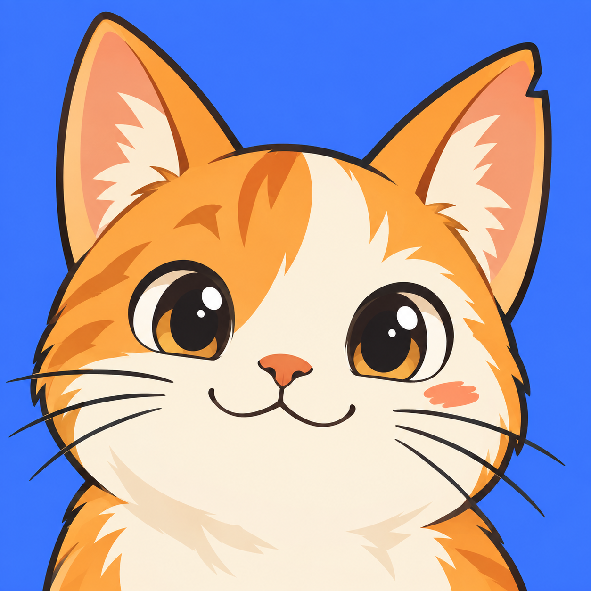
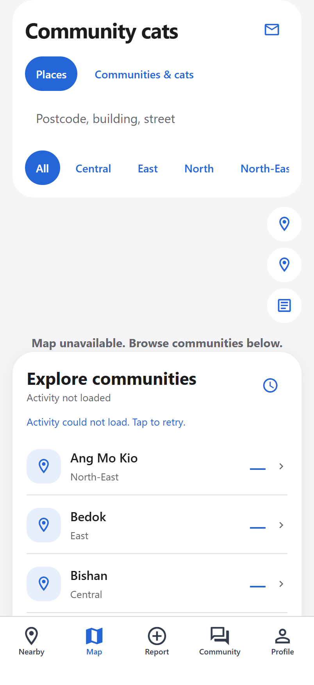
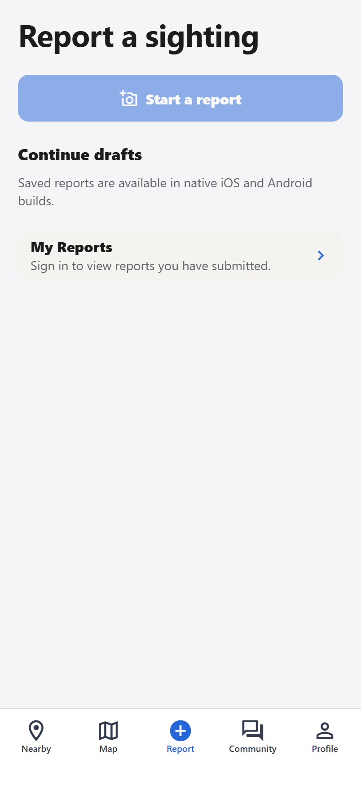
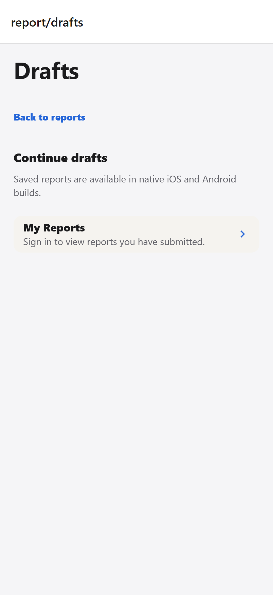
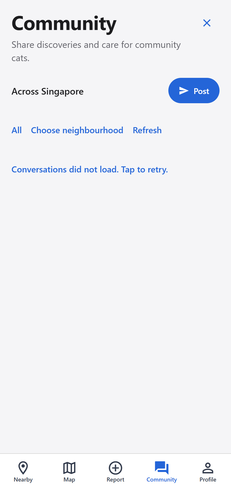
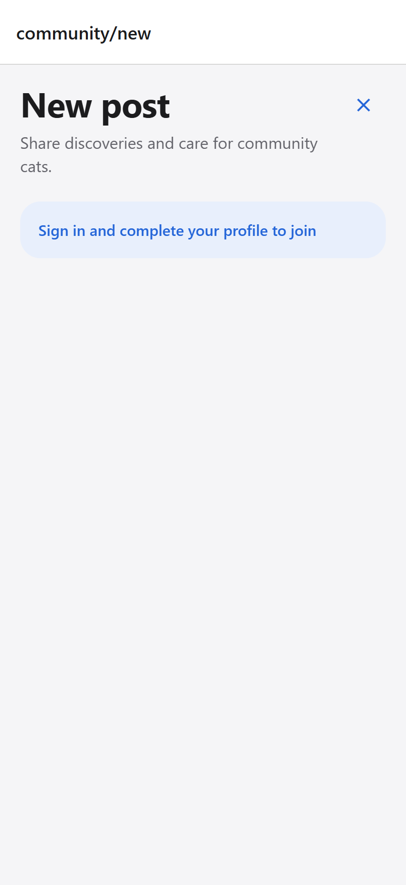
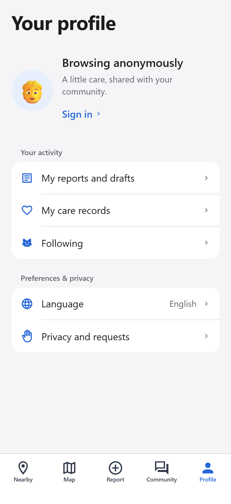

更自然的社区体验
v5 · 真机反馈修订 · 2026-09-09
下方为设计参考图，人物、帖子与数量均为示意，不代表真实社区活动。实际应用从服务端读取公开数据，测试猫明确标记为样本。原生地图、权限弹窗和 Liquid Glass 的最终效果以 iPhone 安装包验收为准。
- 地图：Apple 地点搜索，支持新加坡邮编、建筑与街道；独立的“我的位置”。
- 报告：最近草稿与完整草稿集分开；填写后用摘要确认，楼栋名称正常保留空格。
- 社区：动态浏览、独立发布、关联猫咪、回复与真实点赞。
- 人物头像：默认人物、多个人物预设、拍照和图库上传、预览后保存。
参考：Bluesky（MIT）的信息流结构、Mastodon iOS的讨论层级，以及 Apple 搜索设计。未复制这些项目的品牌素材或源代码。图标与设计图由 imagegen 原创生成。
实际网页布局记录
此浏览器没有配置后端和原生存储，以下保留真实的未登录、不可用与错误状态；不是原生功能验收截图。

地图
报告
草稿集
社区
发布帖子
我的